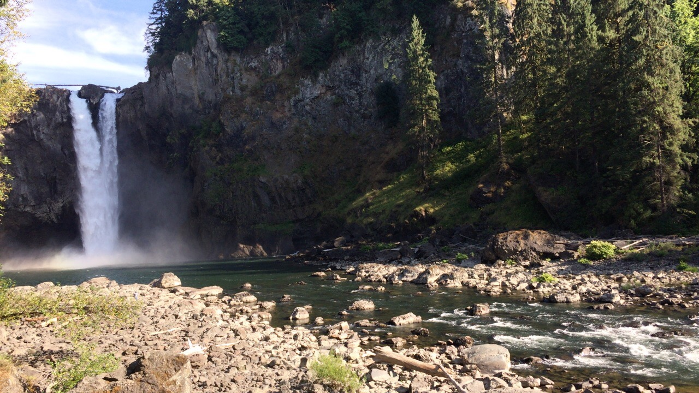
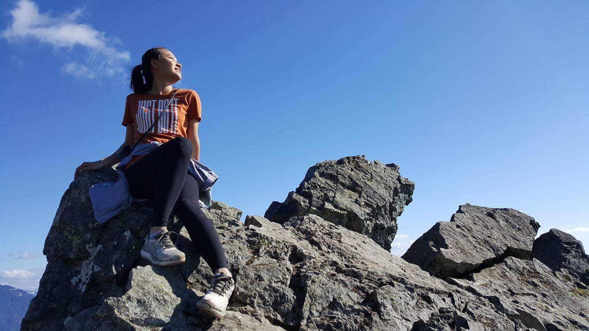
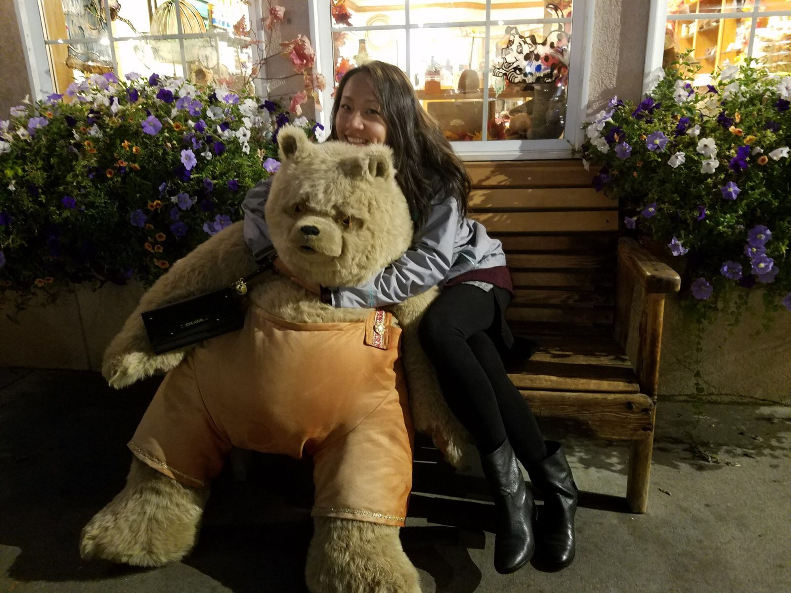
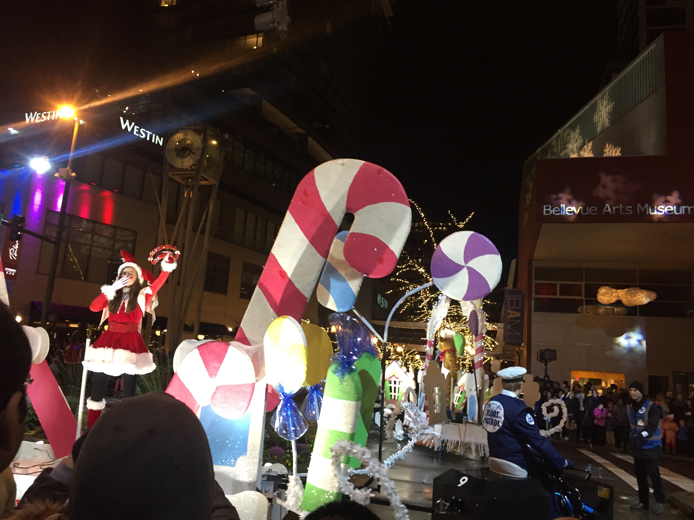
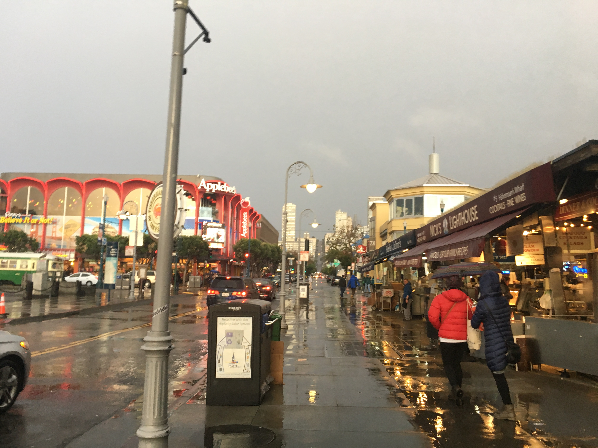
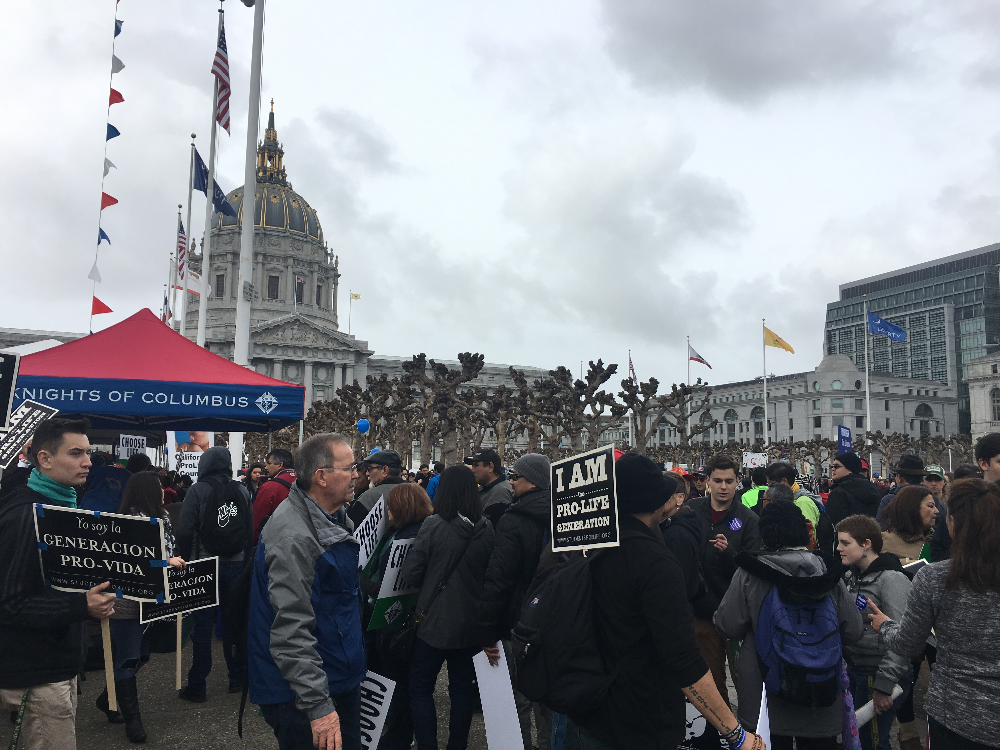
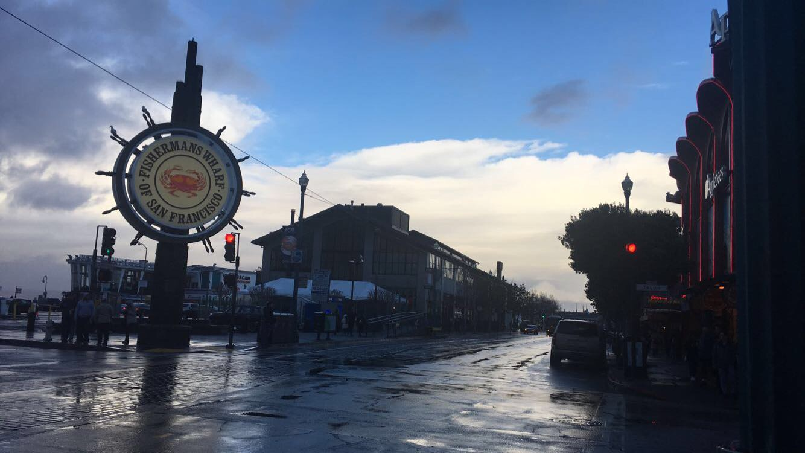
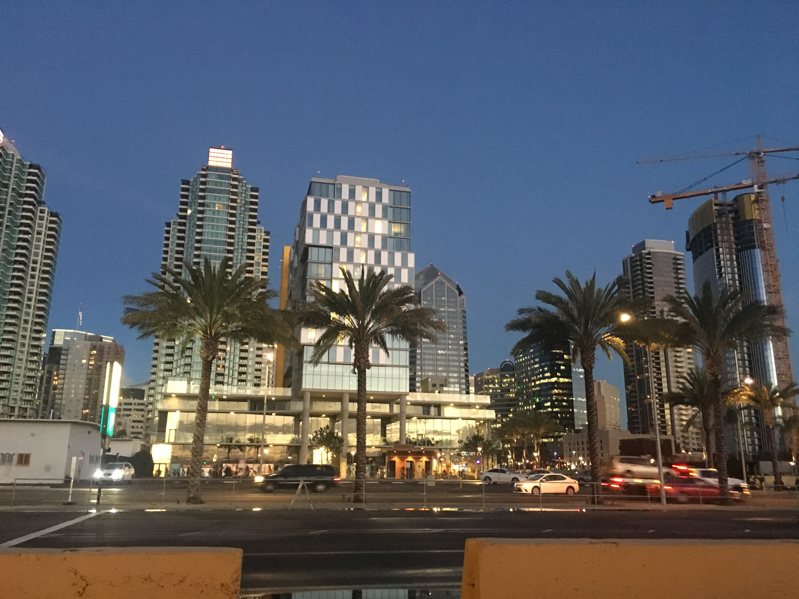
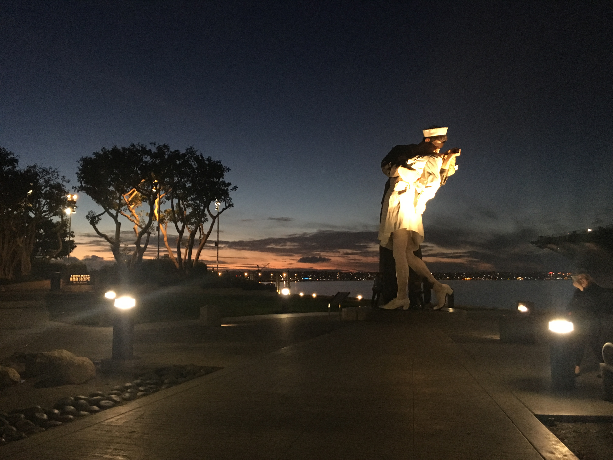

Seattle
- Snoqualmie Falls
- Hiking Leavenworth is a city in Chelan County, Washington, United States. It is part of the Wenatchee−East Wenatchee Metropolitan Statistical Area. The population was 1,965 at the 2010 census. The entire town center is modeled on a Bavarian village. The railroad construction was completed during the winter of 1893. Lafayette Lamb arrived in 1903 from Clinton, Iowa to build the second largest sawmill in Washington state.
-  Leavenworth
-  Christmas
Snoqualmie Falls is one of Washington state’s most popular scenic attractions. More than 1.5 million visitors come to the Falls every year. At the falls, you will find a two-acre park, gift shop, observation deck, the Salish Lodge and the famous 270 foot waterfall.
San Francisco
- Fisherman's Wharf
- Street
-  Fisherman's Wharf
Fisherman's Wharf is a neighborhood and popular tourist attraction in San Francisco, California. It roughly encompasses the northern waterfront area of San Francisco from Ghirardelli Square or Van Ness Avenue east to Pier 35 or Kearny Street.
Fisherman's Wharf is a neighborhood and popular tourist attraction in San Francisco, California. It roughly encompasses the northern waterfront area of San Francisco from Ghirardelli Square or Van Ness Avenue east to Pier 35 or Kearny Street.
Los Angeles
Universal Studios Hollywood is a film studio and theme park in the San Fernando Valley area of Los Angeles County, California. About 70% of the studio lies within the unincorporated county island known as Universal City while the rest lies within the city limits of Los Angeles, California. It is one of the oldest and most famous Hollywood film studios still in use. Its official marketing headline is "The Entertainment Capital of LA". It was initially created to offer tours of the real Universal Studios sets and is the first of many full-fledged Universal Studios Theme Parks located across the world.
San Diego
- San Diego Downtown
- Kissing sailor statue
Immerse yourself in the animal kingdom at the 100-acre (40-ha) San Diego Zoo, home to more than 4,000 animals across 800 rare and exotic species. Spend quality time with giant pandas, New Zealand kiwis, endangered sun bears, and Galápagos tortoises—the zoo’s oldest residents.
The original image of the moment was captured by photographer Alfred Eisenstaedt on August 14, 1945. J. Seward Johnson is the sculptor of this version, though there has been some debate whether it is actually based on the famous photo. In any event, tourists and old veterans love it, assuming the same pose with a loved one at its base, or just peeking up the nurse's skirt.